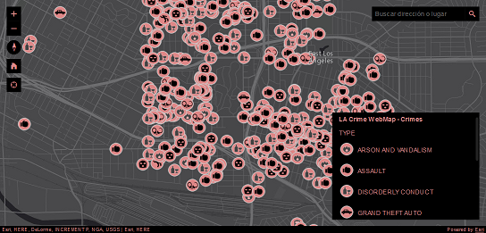
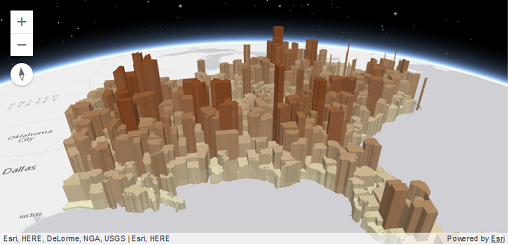
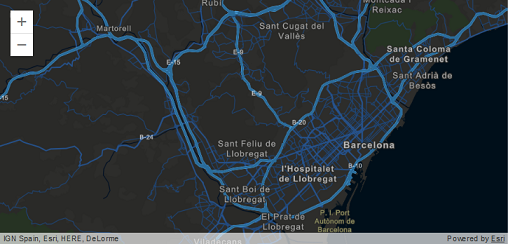

Overview
Version 4.0 of the ArcGIS API for Javascript is the first production release in the 4.x series of the ArcGIS API for Javascript. The 4.x series represents a whole new edition of the Javascript API that Esri is launching side by side alongside the 3.x series. The goal with the 4.x series is to reimagine the API in terms of its support for both 2D and 3D, its ease of use as a Javascript API, its ability to work with map and layer web resources stored as items in the ArcGIS geoinformation model and its support for building engaging and elegant user experiences.
This first release includes all of these aspects but its driving reason for existence is the introduction of 3D capabilities into the world of ArcGIS Javascript development. 4.0 allows developers to build full featured 3D applications powered by Web Scenes that can include rich information layers such as terrain, basemaps, imagery, features, and 3D objects that can be streamed in via tile, feature, image and scene services. In addition, 4.0 also includes core capabilities for working with 2D Web Maps and Layers that can be used to build compelling 2D applications using the new programming pattern.
Developers will find the programming patterns for working in 2D and 3D to be pleasantly similar if not identical.
Note that not all 2D layers and capabilities supported in the 3.x API are supported in 4.0 (see Choose a version for more information). We expect developers to study the supported capabilities and make judicious choices with respect to targeting their applications at the 3.x API or the 4.x API as appropriate. The new API will rapidly evolve so that it not only matches the features in 3.x but far extends its reach. For information on the 3.x and 4.x release plan, see the FAQ.
This is an overview of some key capabilities of the 4.x API:
- Make a 3D map as easily as a 2D map
- Easily integrate with your web GIS
- Author, manage, and mash-up layers using layer items
- Build a great user experience
- Create meaningful visualizations of your data
- Enable interactivity using the local geometry engine
- Bring in vector tile layers
- Login to the platform and access secured content
- Integrate GIS workflows using tasks
- Work with 3rd Party Tools
Make a 3D map as easily as a 2D map
With the introduction of map views, developers can render a map with a 2D view or a 3D view (or both) with just a few lines of code. Working with a 3D view is much like working with a 2D view. For example, both views share the same implementation for layers, renderers, tasks, geometry, symbology, pop-ups, and navigation, but 3D adds 3D-specific concepts such as environment (atmosphere and lighting) and the camera. Learn more about 2D maps and 3D scenes.
Easily integrate with your web GIS
Many developers have adopted the pattern of authoring a web map in ArcGIS Online and Portal for ArcGIS and consuming it in an app. They create beautiful visualizations of their data, configure pop-ups, and setup bookmarks, and then load the map into their app simply referencing the web map's ID. With the 4.0 API, you can follow the same pattern with 3D maps using web scenes. This is accomplished by styling your map in ArcGIS Online or Portal for ArcGIS, saving it as a web scene, and then loading it in your app using the web scene's ID.

The 4 API's architecture mirrors the web map and web scene structure. Because of this, you get the same structure you would expect in a web map or a web scene such as operational layers, basemaps (with reference layers) and other map properties like bookmarks and slides. This map API structure remains the same regardless if you build a map yourself in code, or if you open a map from a portal item.
Author, manage, and mash-up layers using layer items
Layer items are similar to web maps in that they allow developers to setup initial extent, rendering, filtering, pop-ups, and other settings. In contrast to web maps, which, consist of the entire map, layer items represent individual map layers. This allows you to choose the individual layers needed for each application. If you are developing in a team environment, others can also consume your layers, which are represented in a meaningful and consistent way. The 4.0 API lets you load layers by referencing the layer item's ID. Note: Not all of the 2D layer capabilities are supported in the initial 4 release.
Build a great user experience
The 4 API was designed to give you the tools to build an app that has a polished user interface and responsive design. Widgets, flexible UI placement, and control over the map view are a few of the capabilities in this new API that will help you build a user-friendly app suitable for any device.
Widgets are the UI building blocks. API widgets have been built from the ground up with a clean user experience adaptable for any screen resolution. Widgets can be easily placed in one of the corners or offset from the edge. Relative placement of UI elements helps accommodate multiple screen resolutions.
You can use API widgets as-is or style them using CSS to change specific aspects of the widget such as button color.

Controlling the map view: If you need the map to fill only a portion of the screen so that a menu or other UI element occupies the rest of the space, you will want to keep a particular extent centered on the screen. Using view padding, you can make the map center or extent work off a subsection of the full view. As the screen size changes, your map will be centered relative to the location you specified.
Create meaningful visualizations of your data
Developers can turn raw data into information with simple layer styling, rich pop-up windows using the APIs new pop-up implementation, and data-driven visualizations. The current version of the 4 API supports visualizing features in 2D and 3D views using color, size and opacity renderers. Renderers can be used to thematically represent data such as population or represent real-world values such as the width of a tree canopy or the height of a building. Not all renderers available with 3.x have been implemented in the 4 API, and there are also limitations with the FeatureLayer. See migrating for more information on these limitations.

Enable interactivity using the local geometry engine
Developers can leverage the API's local geometry engine to build interactive apps. Having the geometry engine local enables developers to perform operations such as buffer, measurement, and spatial intersect without having to make calls to the server – this means that apps can display immediate feedback to the user, enabling a great user experience. The geometry engine will also enable Esri to create a greatly enhanced editing experience down the road. Here is a potential work flow that illustrates how this could work – the user selects a feature, and as they start to move their mouse to cut the feature they see the new area calculations instantaneously. They are able to see what the resulting areas will be before they complete the edit operation. Editing support will be a key API feature that is targeted for the end of the year.
Bring in vector tile layers
ArcGIS Online has introduced support for vector tile layers as a layer in a web map, and is a supported layer type in the 4 API. Vector tiles are similar to image tiles, but they store a vector representation of the data. Client-side drawing of vector tiles allows for vector tile layers to be customized for the purpose of the map and drives dynamic, interactive cartography.

Login to the platform and access secured content
Allow your end users to login to the platform to access secured content using OAuth, or use legacy token-based authentication. Using OAuth will allow you to manage access to your maps and apps in Online or Portal, and track statistics to see how people are using the apps you've built.
Integrate GIS workflows using tasks
Developers build in powerful ArcGIS capabilities into their apps using tasks. Many of the tasks that were available in the 3.x API are already available in 4.0 such as Geoprocessing, NetworkAnalyst tasks (like closest facility and routing), Locator, and QueryTask. The full list of currently supported tasks is available with the API doc.
Work with 3rd Party Tools
All widgets in this new version of the ArcGIS API for JavaScript API have been reengineered to enhance their extensibility and customization. Each widget's presentation is now separate from its properties, methods, and data. You can use widgets as-is, style them with CSS, or completely customize the UI. While the API is built on Dojo, its widgets are not entirely dependent on Dojo's Dijit framework. The separation of core logic and presentation lets you more easily create new widgets and repurpose existing widgets with any third-party framework such as Bootstrap, React, or jQuery. Learn more about widgets.
Integrating with frameworks: When working on complex solutions, such as enterprise apps, you may want to integrate the JavaScript API into a third-party framework such as Ember. This can make code more maintainable and facilitate development when you are collaborating with other developers. Because 4.0 is a more consistent API, it is much easier for you to integrate it with other development frameworks.
Development environments: Create local builds and bring the API into modern development environments using the API's Bower package available on GitHub.